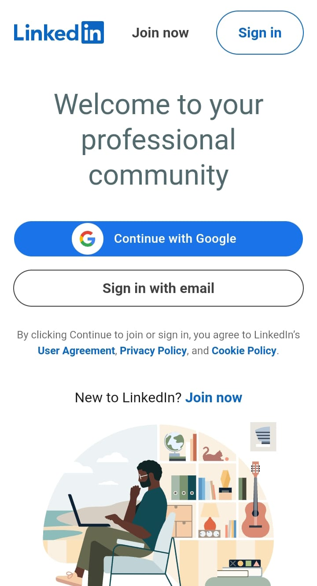

LinkedIn
LinkedIn is a vast platform that offers numerous facilities for users, including the ability to search for jobs related to their fields and stay updated on trending topics. People from all over the world create profiles on LinkedIn, including CEOs of major companies, allowing users to connect with them and seek guidance. Users can sign up for jobs in their respective fields, and many have secured excellent positions both domestically and internationally. This platform is highly rated as it frequently offers job opportunities and access to trending topics for professional guidance.
LinkedIn is a secure platform where individuals can communicate with their colleagues and receive instructions from seniors regarding their career paths. Users can take on projects and part-time jobs through the platform. To get started, individuals need to create their profiles to access these facilities.

How to Get Jobs and Clients on LinkedIn
To find more clients and jobs on LinkedIn, it is essential to have considerable experience in your related field. If you possess significant experience, you can upload your projects on the platform. The best way to showcase your work is to create posts that include links to your projects, which can help your posts gain visibility. When others see and are inspired by your posts, they may reach out to you for collaboration or work opportunities.
How to Join LinkedIn
- Create a LinkedIn account.
- Make your profile look attractive.
- Add your projects and highlight your skills.
- Post daily about your unique content.
- Engage with your seniors and clients.
LinkedIn Joining Link
Join LinkedIn
Founded Date and Founders
Founded on May 5, 2003, by Reid Hoffman and Eric Ly.
How to Make LinkedIn Work for You
LinkedIn isn’t just a platform for job seekers; it’s a powerful space for freelancers, entrepreneurs, and businesses to connect with clients, showcase their skills, and grow their reach. To make LinkedIn work for you, it’s not enough to simply create a profile. You need to strategically build your presence, engage with potential clients, and optimize your visibility.
1. Setting Up Your LinkedIn Profile: The Foundation of Your Success
Your LinkedIn profile is like your professional billboard. It needs to grab attention and communicate your value quickly and effectively. Here’s how to make yours shine:
- Choose a Great Profile Picture: First impressions matter! Use a professional headshot with good lighting and a clean background. A friendly, approachable expression can make a huge difference.
- Write a Clear and Compelling Headline: Your headline should instantly tell people what you do and how you can help. For example:
“Social Media Strategist | Helping Businesses Build Engaging Online Communities”
- Craft an About Section That Speaks to Your Audience: Don’t just list your skills—tell a story. Focus on your strengths, accomplishments, and how you add value. Make it client-centered. For example:
“As a content writer with 5+ years of experience, I specialize in creating engaging, SEO-optimized articles that drive traffic and conversions. Let’s work together to bring your ideas to life!”
- Showcase Your Work in the Featured Section: Use this section to display your best work—whether it’s articles, designs, or case studies. It’s visual proof of your expertise.
- Highlight Your Experience with Results: Under each role, focus on what you achieved rather than just listing tasks. Use numbers to make your accomplishments stand out.
Example: “Increased organic website traffic by 60% through content strategy and SEO.”
- Add Relevant Skills: LinkedIn allows you to list skills, which are crucial for appearing in search results. Stick to skills that align with your goals.
- Request Recommendations: Ask former colleagues or clients for testimonials. Positive recommendations add credibility and build trust.
- Customize Your LinkedIn URL: A clean, professional URL makes it easier for others to find and remember you.
2. How to Attract More Clients on LinkedIn
LinkedIn is a treasure trove of potential clients, but you need a plan to stand out. Here’s how to turn connections into opportunities:
- Tailor Your Profile for Clients: Make sure your profile is client-focused. Instead of just showcasing your skills, explain how you solve problems. Use phrases like “I help businesses achieve…”
- Post Content That Adds Value: Share tips, insights, or success stories related to your field. For instance, a graphic designer might post about the latest design trends, while a marketer could share case studies or quick tips on campaign optimization.
- Engage with Others’ Content: Don’t just post—comment on and share content from your network. Thoughtful comments show your expertise and increase your visibility.
- Join Industry Groups: Participate in LinkedIn groups related to your niche. Answer questions, share insights, and build relationships with potential clients.
- Send Personalized Connection Requests: When reaching out to prospects, avoid generic requests. Personalize your message by referencing their work or explaining why you want to connect.
Example: “Hi [Name], I enjoyed your recent article on [Topic]. As someone working in [Related Field], I’d love to connect and learn more about your perspective!”
- Leverage LinkedIn’s Services Page: If you’re a freelancer, use LinkedIn’s Services page to highlight what you offer. This feature helps clients easily discover and contact you.
- Follow Up with Leads: After connecting, follow up with a message that adds value. For instance, share a relevant article or suggest how you can help with a specific problem.
- Stay Consistent: Consistency is key. Regularly update your profile, post content, and engage with others to ensure you stay visible and relevant.
3. Ranking Higher on LinkedIn: Be More Visible
Ranking higher in LinkedIn search results is crucial for getting noticed by potential clients. Here’s how to improve your visibility:
- Use Keywords Strategically: Think like your target audience. What would they search for? Include these keywords in your headline, About section, and job descriptions.
- Stay Active: LinkedIn’s algorithm favors active users. Log in regularly, post updates, and engage with your network to keep your profile fresh.
- Create Engaging Posts: Posts that receive likes, comments, and shares rank better. Ask questions, create polls, or share thought-provoking ideas to encourage interaction.
- Publish Long-Form Articles: LinkedIn articles are a great way to showcase your expertise. Write about topics that matter to your audience, like industry trends or solutions to common problems.
- Add Hashtags to Your Posts: Use relevant hashtags to increase the reach of your content. Research popular hashtags in your niche and include them in your posts.
- Encourage Profile Visits: Share your LinkedIn profile link in your email signature, on social media, and even in client proposals. More visits signal activity to LinkedIn’s algorithm.
- Get Recommendations and Endorsements: These add credibility and help your profile rank higher. Make it a habit to request them after completing projects.
- Keep Your Profile Updated: A complete and updated profile performs better. Regularly review your skills, experience, and portfolio to ensure everything is current.
By effectively setting up your LinkedIn profile, attracting clients, and optimizing your visibility, you can leverage LinkedIn as a powerful tool for your professional growth.